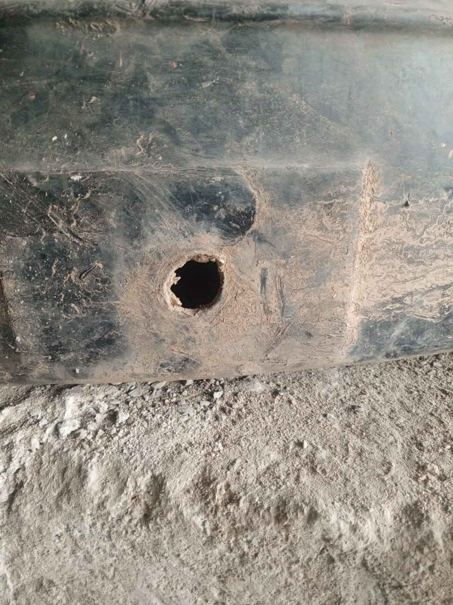
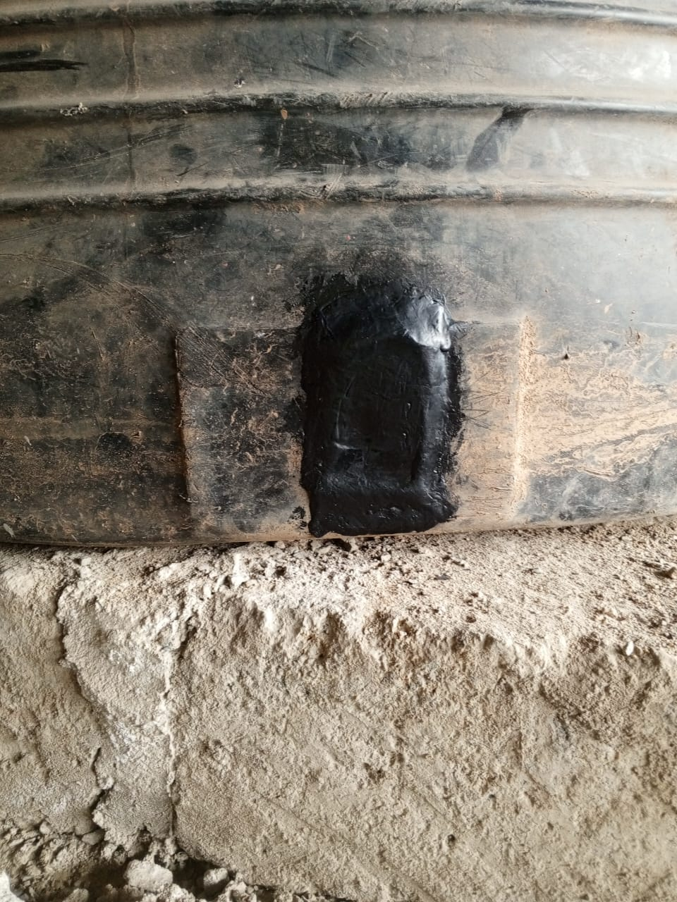
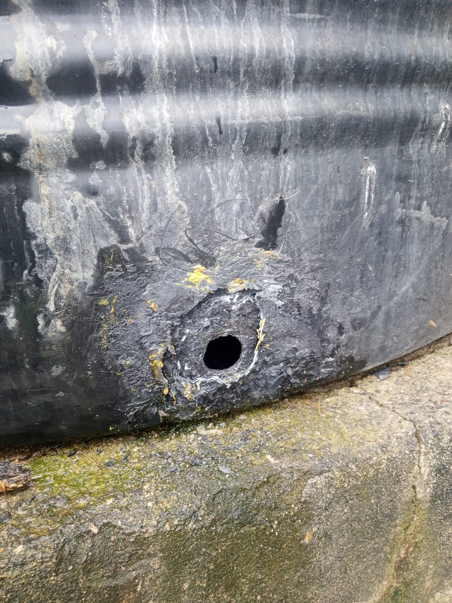
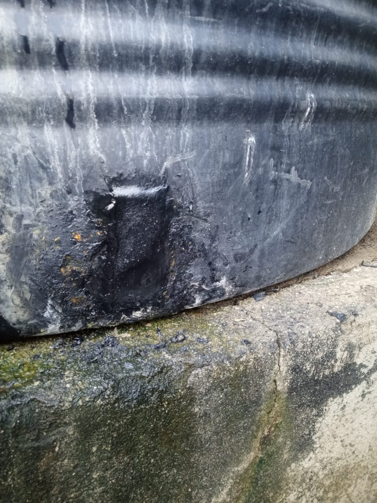

1 YEAR WARRANTY ON ALL REPAIRS
Professional Water Tank Repair Services in Kenya
Expert technicians providing reliable, affordable, and efficient plastic water tank repairs across Kenya with guaranteed quality workmanship.
.jpeg)
.jpeg)


1 YEAR WARRANTY ON ALL REPAIRS
Expert technicians providing reliable, affordable, and efficient plastic water tank repairs across Kenya with guaranteed quality workmanship.
Comprehensive water tank leak repair, maintenance & inspections

.jpeg)
Expert repair of all types of plastic water tanks with advanced techniques and 1-year warranty on all repairs. We repair both sides (inside and outside as seen in the picture).
Learn More.jpeg)

Advanced leak detection services using state-of-the-art equipment to identify and fix leaks quickly and efficiently. We repair both sides (inside and outside as seen in the picture).
Learn More

Professional cleaning and maintenance services to keep your water tanks in optimal condition and extend their lifespan. We repair both sides (inside and outside as seen in the picture).
Learn MoreLeading plastic water tank repair experts in Kenya with over 10 years of experience.
We are the trusted specialists in plastic water tank repairs across Kenya, serving residential and commercial clients nationwide. Our team of skilled technicians uses the latest techniques and high-quality materials to ensure your water tanks are repaired to the highest standards.
All our repairs come with a comprehensive 1-year warranty, giving you complete peace of mind. We pride ourselves on delivering reliable, affordable, and efficient services that meet the unique needs of our customers.
Learn More About Us
Expert repair services for steel and concrete water tanks across Kenya.
Our skilled technicians specialize in repairing leaks, cracks, and damage in steel and concrete water tanks. Using advanced techniques and high-quality materials, we ensure durable repairs that withstand Kenya's climate conditions. Whether it's rust damage, structural cracks, or seal failures, we provide comprehensive solutions for all types of steel and concrete tanks.
We serve residential and commercial clients throughout Nairobi, Kiambu, Machakos, and surrounding areas. All our repairs come with a 1-year warranty, giving you complete peace of mind. Contact us today for professional steel and concrete tank leak repair services.
Learn More About Our Services
24/7 emergency water tank repair services when you need them most.
Water tank emergencies don't wait, and neither do we. Our emergency repair team is available 24/7 to handle urgent water tank issues across Kenya. Whether it's a sudden leak, burst pipe, or damaged tank causing water loss, we respond quickly to minimize damage and restore your water supply.
Serving Nairobi, Kiambu, Machakos, Kajiado, and surrounding areas with same-day emergency repairs. Our experienced technicians use specialized equipment to diagnose and fix problems fast. Call us immediately for emergency water tank repairs - we're here to help when you need it most.
Call for Emergency Repair
Helpful answers for customers searching for water tank repair services in Kenya.
The cost depends on the tank size and the extent of damage. Small leak repairs usually cost less than major crack restoration. Call us for a quick quote based on your tank condition.
Yes. Many cracked plastic tanks can be repaired effectively when the right materials and repair techniques are used. Our repairs are backed by a 1-year warranty.
Yes. We serve Nairobi, Mombasa, Kisumu and customers across Kenya depending on the job location and scope.
Most standard leak repairs can be completed the same day after inspection, while larger repairs or deep cleaning jobs may take longer.
Yes. We provide both tank cleaning and maintenance services to improve hygiene and reduce the risk of future leaks and contamination.
Request a QuoteTrusted water tank repair experts in Kenya with proven results
Over 10 years of experience in plastic, steel, and concrete water tank repairs across Kenya.
All repairs backed by comprehensive warranty for complete peace of mind.
Quick response times and efficient repairs to minimize disruption to your water supply.
Competitive rates for high-quality water tank repair services in Kenya.
Serving Nairobi, Kiambu, Machakos, Kajiado, Murang'a, and surrounding areas.
Thousands of satisfied customers and 4.7-star rating for reliable service.
We provide professional water tank repair services throughout Kenya, including:
Nairobi, Kiambu, Machakos, Kajiado, Murang'a, Thika, Ongata Rongai, Ruaka, Karen, Westlands, Embakasi, Kasarani, and surrounding areas. Whether you need plastic water tank repair in Nairobi or water tank leak repair services in any Kenyan town, our experienced technicians are ready to assist you with fast, reliable, and affordable solutions.
See our recent plastic water tank repair projects - Before & After


Professional repair of major tank crack with warranty. We repair both sides (inside and outside as seen in the picture).


Complete leak detection and sealing service. We repair both sides (inside and outside as seen in the picture).
Full tank cleaning and restoration service. We repair both sides (inside and outside as seen in the picture).
Our 4.7-star rating is built on trust, quality, and reliable, permanent repairs.